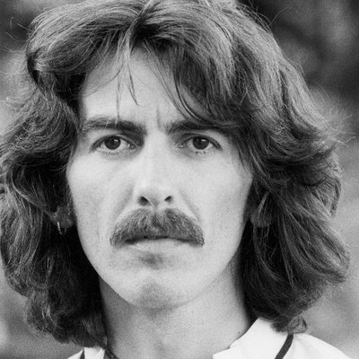

PARIEZ TOUT DE SUITE ET IMMEDIATEMENT
Ici, vous trouverez toutes les informations nécessaires pour faire votre choix. Parcourez la liste des antécédents médicaux des membres du groupe, découvrez l'état de leurs côtes, et votez pour votre champion en remplissant le formulaire.
Bonne chance à tous...
Ringo Starr
CÔTE
2,25

MORT
John Lennon
INDISPONIBLE
depuis le
8 décembre 1980

MORT
George Harrison
INDISPONIBLE
depuis le
29 novembre 2001
Paul McCartney
CÔTE
1,89